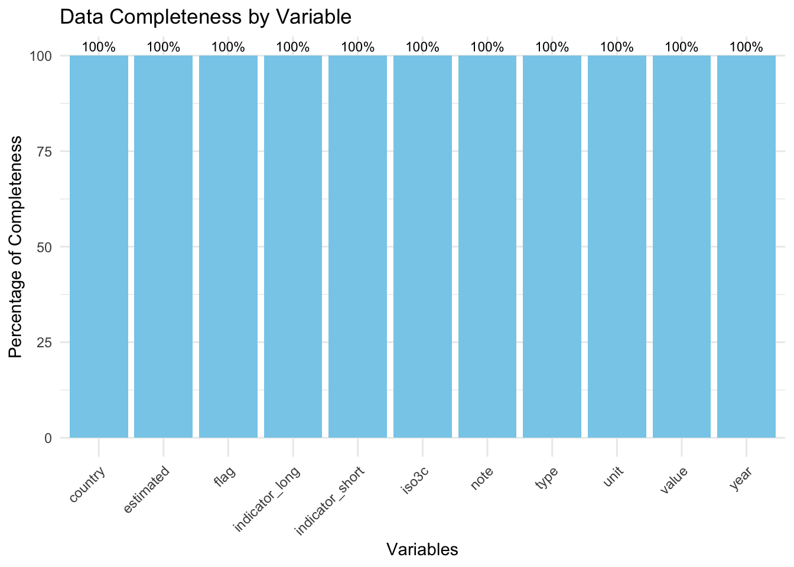

For this project, we are utilizing the World Food Security Outlook (WFSO) dataset, a globally recognized resource developed by the World Bank. This dataset offers a comprehensive view of severe food insecurity, providing historical, current, and projected data from 1999 to 2028. Covering 191 countries, the dataset supports an in-depth analysis of food insecurity prevalence and its contributing factors.
2.1.1 Source:
The dataset is produced and maintained by the World Bank Development Economics Data Group and the Agriculture Global Practice. It is publicly accessible via the World Bank Microdata Library and an accompanying API for efficient data integration.
2.1.2 Description:
The dataset comprises 21,010 observations and focuses on key indicators such as the prevalence of severe food insecurity, population sizes of affected individuals, and the financing required to mitigate food insecurity risks. The data integrates multiple authoritative sources, including the FAO, IMF, and FEWS NET, and employs machine learning models to enhance accuracy and provide reliable projections.
2.1.3 Variables:
• iso3c: ISO 3166-1 alpha-3 country code identifying each country.
• country: Full name of the country or territory.
• indicator_short: A concise identifier for the specific indicator (e.g., “Prevalence”).
• indicator_long: A detailed description of the indicator being measured.
• unit: Unit of measurement, such as percentages (%) or monetary values (USD).
• year: Numeric year associated with the observation, ranging from 1999 to 2028.
• value: The numeric value of the indicator, representing food insecurity data.
• flag: A descriptor noting whether the data point is observed, estimated, or modeled.
• type: Classification of the observation (e.g., historical, preliminary, or forecast).
• note: Supplementary details about the data point, such as methodology or context.
• estimated: A binary indicator specifying whether the value was estimated (1) or directly observed (0).
2.1.4 Format:
The dataset is structured with observations for each country-year combination, represented through 11 key variables. It is available in JSON and CSV formats, which can be transformed into tabular structures for analysis using tools like Python, R, or SQL.
2.1.5 Frequency of Updates:
The WFSO dataset is updated three times annually, aligning with the IMF’s World Economic Outlook and FAO reports, ensuring timeliness and relevance.
2.1.6 Data Access and Cleaning:
The World Food Security Outlook (WFSO) dataset is accessible through the World Bank’s API, which allows efficient retrieval and integration of data for analysis. The dataset includes 21,010 observations, providing insights into global food insecurity trends from 1999 to 2028. The API enables customized queries with parameters such as fields, filter, and limit to fetch specific variables or subsets of the data.
Using R’s httr package, data was retrieved in chunks to handle the large dataset efficiently. The limit parameter was set to 5,000 rows per request, and the offset parameter was iteratively adjusted to fetch subsequent rows. This method ensured efficient access to the entire dataset while adhering to API constraints.
2.1.8 Importing the Data:
Using R’s httr package, the data was fetched incrementally in chunks of 5,000 rows to handle the large dataset. Below is the R code used for data retrieval:
The following objects are masked from 'package:stats':
filter, lag
The following objects are masked from 'package:base':
intersect, setdiff, setequal, union
Code
library(tidyr)library(ggplot2)
Code
# Define the API endpointbase_url <-"https://microdata.worldbank.org/index.php/api/tables/data/fcv/wfso"limit <-5000# Number of rows per requesttotal_rows <-21010# Total number of rowsall_data <-list() # List to store all rows of data
Code
# Loop through the data in chunksfor (offset inseq(0, total_rows, by = limit)) {# Build the URL with limit and offset url <-paste0(base_url, "?limit=", limit, "&offset=", offset)# Make the GET request response <-GET(url)if (status_code(response) ==200) {# Parse the JSON response data_chunk <-fromJSON(content(response, as ="text"), flatten =TRUE)$data all_data <-append(all_data, list(data_chunk))cat("Fetched", nrow(data_chunk), "rows. Total so far:", sum(sapply(all_data, nrow)), "\n") } else {cat("Error: ", status_code(response), ". Stopping.\n")break }}
Fetched 5000 rows. Total so far: 5000
Fetched 5000 rows. Total so far: 10000
Fetched 5000 rows. Total so far: 15000
Fetched 5000 rows. Total so far: 20000
Fetched 1010 rows. Total so far: 21010
Code
# Combine all chunks into a single data framedf <-bind_rows(all_data)
Code
# Save the data to a CSV file (optional)write.csv(df, "cleaned_data.csv", row.names =FALSE)
Code
# Display the first few rows of the datasethead(df)
iso3c country indicator_short
1 AFG Afghanistan Prevalence of Severe Food Insecurity (%)
2 AFG Afghanistan Prevalence of Severe Food Insecurity (%)
3 AFG Afghanistan Prevalence of Severe Food Insecurity (%)
4 AFG Afghanistan Prevalence of Severe Food Insecurity (%)
5 AFG Afghanistan Prevalence of Severe Food Insecurity (%)
6 AFG Afghanistan Prevalence of Severe Food Insecurity (%)
indicator_long
1 Prevalence of severe food insecurity in the total population (percent) (3-year centered average)
2 Prevalence of severe food insecurity in the total population (percent) (3-year centered average)
3 Prevalence of severe food insecurity in the total population (percent) (3-year centered average)
4 Prevalence of severe food insecurity in the total population (percent) (3-year centered average)
5 Prevalence of severe food insecurity in the total population (percent) (3-year centered average)
6 Prevalence of severe food insecurity in the total population (percent) (3-year centered average)
unit year value flag type
1 % 1999 22.5 Estimate Historical model estimate
2 % 2000 22.6 Estimate Historical model estimate
3 % 2001 18.2 Estimate Historical model estimate
4 % 2002 17.8 Estimate Historical model estimate
5 % 2003 18.1 Estimate Historical model estimate
6 % 2004 22.7 Estimate Historical model estimate
note
1 Modeled following Andree, B.P.J. 2022. Machine Learning Guided Outlook of Global Food Insecurity Consistent with Macroeconomic Forecasts, extended coverage following Gatti et al. 2023. Altered Destinies: The Long-Term Effects of Rising Prices and Food Insecurity in the Middle East and North Africa
2 Modeled following Andree, B.P.J. 2022. Machine Learning Guided Outlook of Global Food Insecurity Consistent with Macroeconomic Forecasts, extended coverage following Gatti et al. 2023. Altered Destinies: The Long-Term Effects of Rising Prices and Food Insecurity in the Middle East and North Africa
3 Modeled following Andree, B.P.J. 2022. Machine Learning Guided Outlook of Global Food Insecurity Consistent with Macroeconomic Forecasts, extended coverage following Gatti et al. 2023. Altered Destinies: The Long-Term Effects of Rising Prices and Food Insecurity in the Middle East and North Africa
4 Modeled following Andree, B.P.J. 2022. Machine Learning Guided Outlook of Global Food Insecurity Consistent with Macroeconomic Forecasts, extended coverage following Gatti et al. 2023. Altered Destinies: The Long-Term Effects of Rising Prices and Food Insecurity in the Middle East and North Africa
5 Modeled following Andree, B.P.J. 2022. Machine Learning Guided Outlook of Global Food Insecurity Consistent with Macroeconomic Forecasts, extended coverage following Gatti et al. 2023. Altered Destinies: The Long-Term Effects of Rising Prices and Food Insecurity in the Middle East and North Africa
6 Modeled following Andree, B.P.J. 2022. Machine Learning Guided Outlook of Global Food Insecurity Consistent with Macroeconomic Forecasts, extended coverage following Gatti et al. 2023. Altered Destinies: The Long-Term Effects of Rising Prices and Food Insecurity in the Middle East and North Africa
estimated
1 oct_2023
2 oct_2023
3 oct_2023
4 oct_2023
5 oct_2023
6 oct_2023
2.1.9 Final Dataset:
• Format: A structured CSV file containing 21,010 rows and 11 columns.
Before proceeding with any analysis, it is essential to examine the dataset for missing values to ensure data completeness and accuracy. While the WFSO dataset is well-structured, missing values can occur due to data collection challenges, especially in global datasets with diverse sources. Identifying and addressing these gaps is a critical step in ensuring reliable analysis.
To begin, we first assess the dataset for missing values across all variables. This involves counting the number of rows and columns with missing data and calculating the percentage of missing values for each variable. This analysis provides an overview of the data quality and highlights areas that may require imputation or exclusion.
Here’s how the missing values are summarized:
• Check for missing values in each column.
• Identify the percentage of missing data for each variable.
• Determine whether missingness is concentrated in specific variables (e.g., numerical vs. categorical) or is distributed across the dataset.
Code
# Calculate missing vs non-missing percentagesmissing_total <-sum(is.na(df))complete_total <-sum(!is.na(df))data_completeness <-data.frame(Status =c("Non-Missing", "Missing"),Count =c(complete_total, missing_total))# Create a pie chartggplot(data_completeness, aes(x ="", y = Count, fill = Status)) +geom_bar(stat ="identity", width =1) +coord_polar("y", start =0) +labs(title ="Data Completeness Summary",fill ="Status" ) +scale_fill_manual(values =c("Non-Missing"="skyblue", "Missing"="red")) +theme_void() +theme(legend.title =element_text(size =12), legend.text =element_text(size =10))
Observations: The pie chart shows that the dataset is 100% complete, with all data points labeled as “Non-Missing.”There are no missing values, as indicated by the absence of the “Missing” section in the pie chart.
Code
completeness_summary <- df |>summarise(across(everything(), ~sum(!is.na(.)) /nrow(df) *100)) |>pivot_longer(cols =everything(), names_to ="Variable", values_to ="Completeness")# Create a bar chartggplot(completeness_summary, aes(x =reorder(Variable, -Completeness), y = Completeness)) +geom_bar(stat ="identity", fill ="skyblue") +geom_text(aes(label =paste0(round(Completeness, 1), "%")), vjust =-0.5, size =3) +labs(title ="Data Completeness by Variable",x ="Variables",y ="Percentage of Completeness" ) +theme_minimal() +theme(axis.text.x =element_text(angle =45, hjust =1))

Observations: Each bar represents a variable, and all bars reach 100%, indicating complete data for every column. There are no gaps or incomplete variables, confirming no missing values in the dataset.
Code
df_char <- df %>%mutate(across(everything(), as.character))# Prepare data for the heatmapheatmap_data <- df_char %>%mutate(row =row_number()) %>%pivot_longer(cols =-row, names_to ="Variable", values_to ="Value") %>%mutate(Missing =ifelse(is.na(Value), "Missing", "Not Missing"))# Plot the heatmapggplot(heatmap_data, aes(x = Variable, y = row, fill = Missing)) +geom_tile(color ="white") +scale_fill_manual(values =c("Not Missing"="steelblue", "Missing"="red")) +labs(title ="Missing Values Heatmap",subtitle ="Dataset is 100% complete (No Missing Values)",x ="Variables",y ="Rows" ) +theme_minimal() +theme(axis.text.x =element_text(angle =45, hjust =1),axis.text.y =element_blank(),axis.ticks.y =element_blank() )
Observations: The heatmap shows no red tiles, meaning there are no missing data points across rows and variables. The dataset is entirely complete, as supported by the uniform “Not Missing” label for all data points.
2.2.1 Missing Value Summary
Total missing values: 0
Total variables analyzed: 11
Dataset is 100% complete with no missing values across any rows or columns.